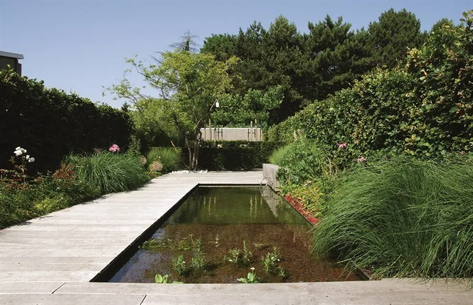
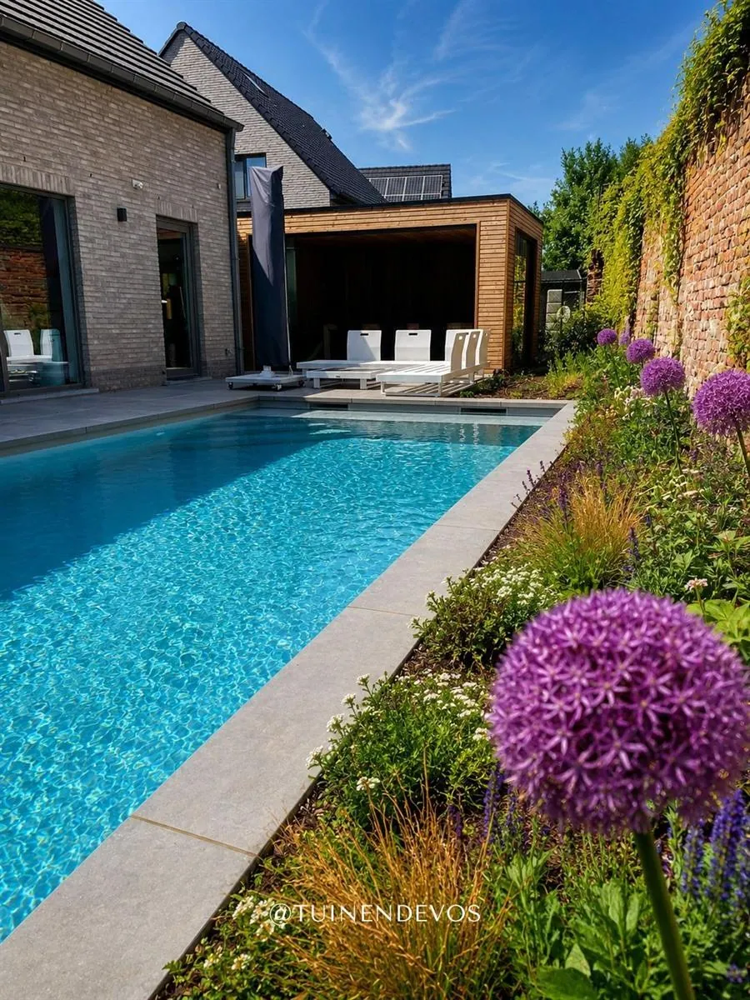
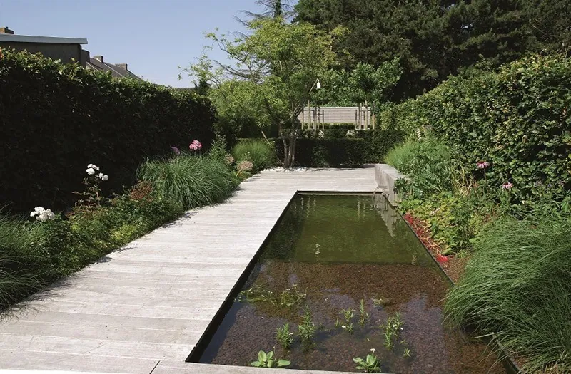
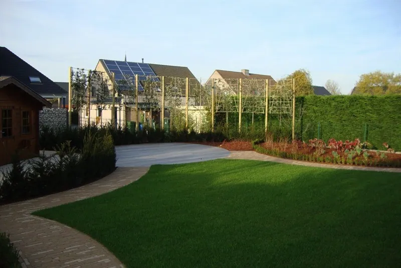
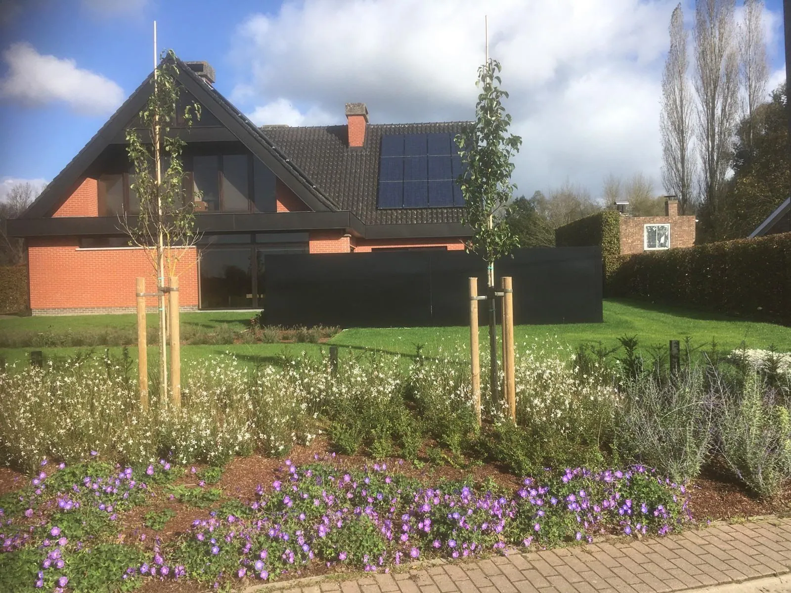
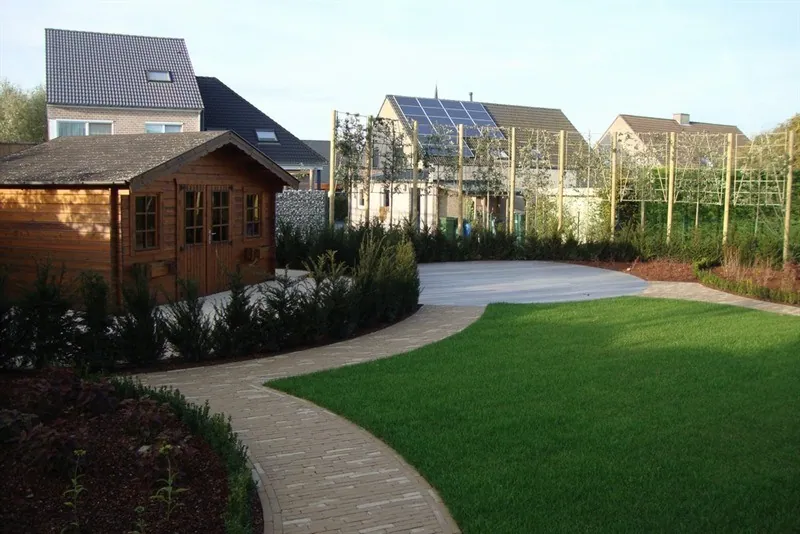
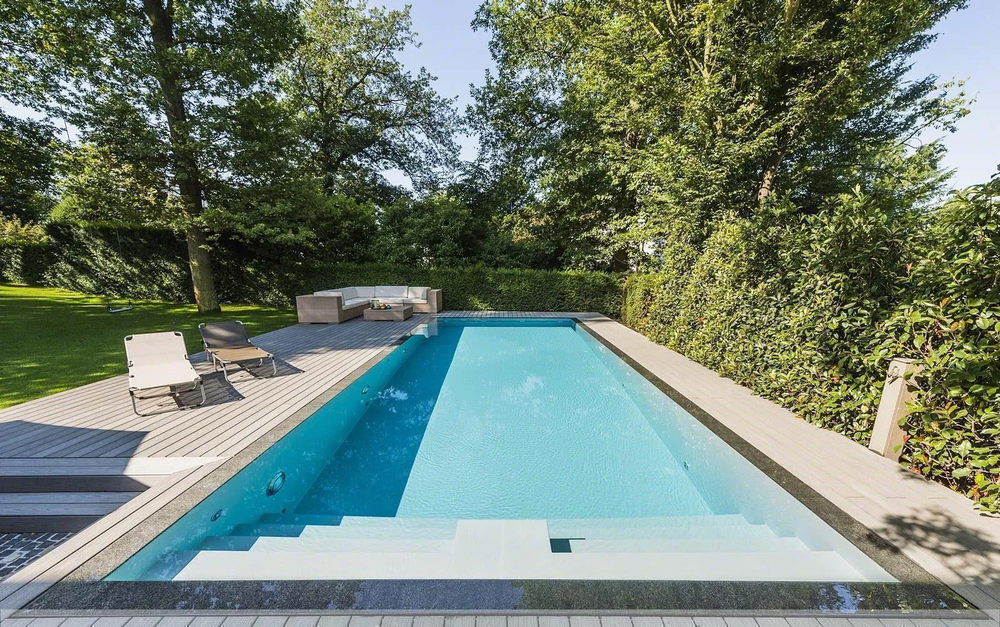
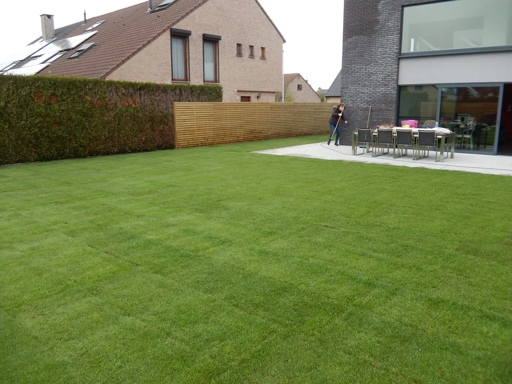
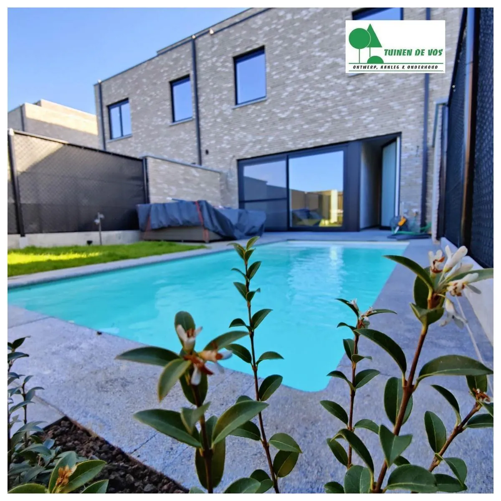
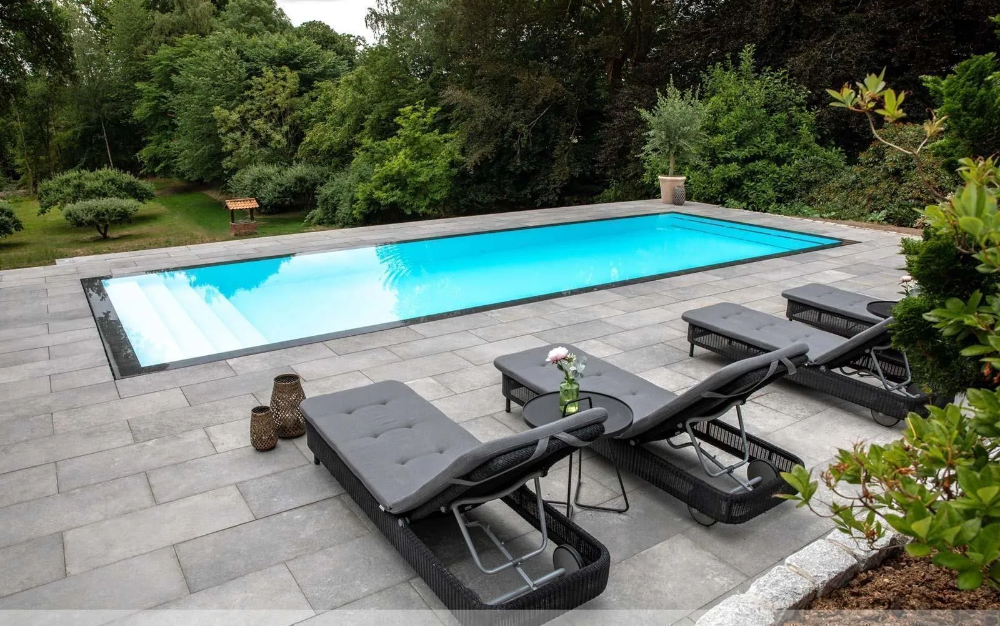

01Tuinontwerp in 3D
We komen bij je thuis kijken, maken een schets en werken die uit tot een 3D-ontwerp met beplantingsplan.
Tuinen De Vos ontwerpt, legt aan en onderhoudt tuinen rond Geraardsbergen, Herzele en Zottegem. Je ziet je nieuwe tuin eerst in 3D, daarna komen onze eigen ploegen met hun eigen machines. Ook voor een zwembad, een vijver of een nieuw terras.
Eerst eens horen wat er kan? Bel 0475 93 60 02



Tuinen De Vos is een jonge tuinaannemer uit Zuid-Oost-Vlaanderen. We doen het ontwerp én de volledige aanleg zelf, met een eigen machinepark. Zo hoef je niet te schipperen tussen een tuinarchitect, een grondwerker en een hovenier.
Van schets tot snoeischaar.
Een volledig nieuwe tuin, een terras en oprit, of enkel iemand die het onderhoud overneemt. Kies wat je nodig hebt.

01We komen bij je thuis kijken, maken een schets en werken die uit tot een 3D-ontwerp met beplantingsplan.

02Grondwerk, terras en oprit, keerwanden, gazon, beplanting en tuinverlichting. Alles door onze eigen ploegen.

03Gazon, hagen scheren, snoeien, bemestingsadvies en bomen vellen. In de winter ruimen we ook sneeuw.
Een zwembad, zwemvijver of gewone vijver, mee ontworpen met de rest van je tuin.

05Een plek om om te kleden, de techniek te verstoppen of gewoon in de schaduw te zitten.

06De hele omgeving rond je woning of bedrijf: van grondwerk en keerwanden tot schanskorven en palissades.
Hedendaags: strakke lijnen, maar met veel groen ertussen.Ook in Asse, Gavere, Gooik, Ninove en Zottegem
Landelijk: zachte vormen, natuurlijke materialen en royale borders.Ook in Goeferdinge, Herzele, Melle, Oudegem en Zwalm
Modern: grote vlakken, sterke materialen en weinig onderhoud.Ook in Kalken, Lierde, Maarkedal, Merelbeke en Opdorp
We beginnen niet met graven, maar met kijken: naar je huis, je grond, de zon en de buren.
We bekijken de bodem, de bestaande planten, de zon en de stijl van je woning. En we luisteren naar wat jij wil.
Je krijgt een eerste schets. In onze showroom bekijk je de planten en materialen in het echt.
Een uitgewerkt plan in 3D, met beplantingsplan, plantenlijst en een duidelijke prijsofferte.
Onze ploegen gaan aan de slag met eigen machines. Wil je, dan nemen we daarna ook het onderhoud over.


Water werkt pas als het in de tuin past. Daarom tekenen we het zwembad of de vijver mee in het ontwerp, met het terras, de beplanting en het poolhouse erbij. Het onderhoud nadien kunnen we ook voor je doen.
Vanuit Geraardsbergen, Herzele en Zottegem. Hiernaast een paar gemeenten waar al een tuin van ons ligt.
Hier is ongelofelijk veel werk verzet in de laatste 7 maand. De tuinarchitect heeft zijn uiterste best gedaan om al de verschillende planten te vinden. Sommige waren niet evident, toch gaf hij niet op. Ons geduld is beloond geweest met een prachtige tuin, vol met planten van onze keuze.
Ik moet jullie meedelen dat jullie werklieden hun werk van harte nemen. Daarom van onzentwege een grote merci. Uw mensen zijn een waar uithangbord.
We zoeken een collega voor tuinonderhoud en een gemotiveerde ploegverantwoordelijke.
Stuur ons een mailtjeEen paar woorden zijn genoeg. We bellen je terug en spreken af om bij jou thuis te komen kijken.
We hebben je aanvraag goed ontvangen en nemen snel contact met je op om een afspraak te maken.
Ja. We maken een realistisch 3D-ontwerp van je tuin. We kunnen er ook de tuinverlichting in zetten, zodat je ziet hoe het ’s avonds oogt.
We komen het liefst bij je thuis. Dan zien we meteen de grond, de bestaande beplanting, hoe de zon valt en welke stijl je woning heeft.
Ja. Na de eerste schets nodigen we je uit in onze showroom. Daar bekijk je de voorgestelde planten en materialen in het echt.
Zeker. Gazononderhoud, hagen scheren, snoeien, onkruid- en ziektebestrijding, zwembaden en vijvers onderhouden, bomen vellen en verhakselen. In de winter ruimen we ook sneeuw en strooien we zout.
Ja, in heel de streek. We legden al tuinen aan in onder meer Aalst, Ninove, Erpe-Mere, Merelbeke, Melle en Zwalm.
DIEen woordje uitleg van Stijn
Ik maakte deze demo voor jullie om te tonen wat er kan. Na een kort gesprek maak ik er iets veel persoonlijkers van, helemaal naar jullie wens.
Vrijblijvend. Ik kom langs of we bellen.
Op maat, op jullie eigen domein.
Geen voorschot. Jullie betalen pas als alles klaar is.
Hosting, domeinnaam en kleine wijzigingen, zoals nieuwe openingsuren.
Omdat een voorbeeld meer zegt dan een mail. Zo zien jullie meteen wat er kan, en het kost jullie niets.
Nee. Het gesprek is vrijblijvend. Vinden jullie het niks, dan is het daarmee gedaan.
Na ons gesprek staat jullie site binnen 10 tot 14 dagen online.
Zeker. Jullie domeinnaam kan gewoon blijven, de nieuwe site komt in de plaats van de oude.
Nee, dat doe ik op basis van ons gesprek. Eigen foto's zijn mooi meegenomen, maar niet nodig om te starten.